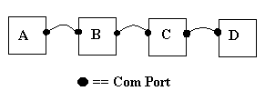

Back to host setup | Back to main Diablo page
The Client(s)
When more then two computers are used in the game the computers closest to the host must connect to the game first, then followed by the other clients.
For example, you have computers linked up like this:

If Computer A is the host then in order for computers C & D to connect to the game, first Computer B must connect, then Computer C connects, and then Computer D connects.
If Computer C is the host then Computer D can connect (at any time), but Computer B must connect before computer A can connect.
Each client needs to click on these Diablo options:
Multiplayer, Direct Cable Connection
Select your saved player from the list or create a new one
The connections should establish and players should join in on the game. A very common reason for failure of this type of game is due to modems sharing the same com port address and/or IRQ. Make sure that your modem is not being used as it is probably causing the conflict. Also read the Diablo CD serial.txt file for more information on troubleshooting this type of problem.
Rodney Beede © 1999-2000 | Top